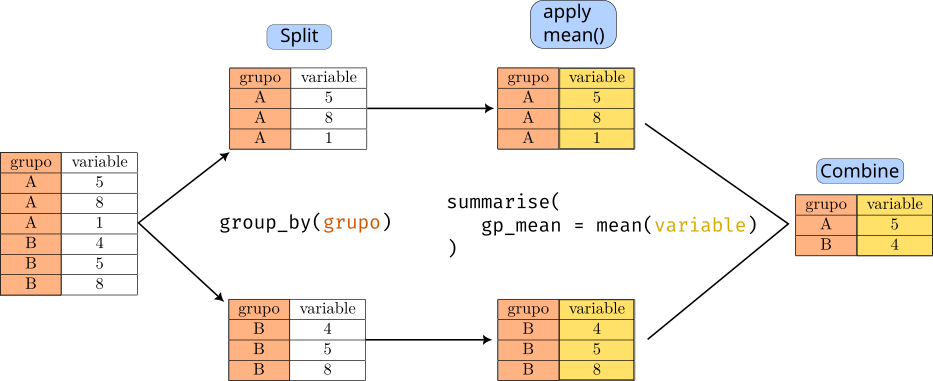

library(IRdisplay)
dir_name <- paste0(getwd(), "/img/tidy-1.png")
display_png(file = dir_name, width = 480)
{dplyr} y {tidyr}El término data wrangling no tiene una traducción directa al español, pero hace referencia a un proceso que consiste en transformar datos crudos en otro formato que pueda ser usado para su análisis, y por esta razón, tener un objetivo de análisis es importante, ya que con base en ese objetivo se planifica la manipulación de la estructura, granularidad, precisión, etc. Generalmente, implica alguno(s) de los siguientes pasos:
tidy o long-format, que veremos más adelante).Años puede tener entradas que no sigan el mismo formato. Reducir los errores de tal forma que no influyan en los análisis.tidy data“A dataset is a collection of values, usually either numbers (if quantitative) or strings AKA text data (if qualitative). Values are organised in two ways. Every value belongs to a variable and an observation. A variable contains all values that measure the same underlying attribute (like height, temperature, duration) across units. An observation contains all values measured on the same unit (like a person, or a day, or a city) across attributes.” Wickham, 2014
El formato tidy es un estándar de presentación que mapea el significado de un conjunto de datos a su estructura. Consiste básicamente en las siguientes tres reglas:
library(IRdisplay)
dir_name <- paste0(getwd(), "/img/tidy-1.png")
display_png(file = dir_name, width = 480)
{dplyr}{dplyr} es un paquete para la manipulación de datos que consiste en un conjunto de ‘verbos’ (o funciones) como:
mutate(): añade nuevas variables (columnas).select(): seleccionar columnas (variables) de un data frame por su nombre y retorna un data frame con solo las columnas seleccionadas.filter(): selecciona casos (filas) por su valor. Necesita una expresión lógica con la cual realizar la selección.summarise(): crea un nuevo data frame basado en combinaciones únicas de variables agrupadoras.group_by(): no realiza ninguna transformación, pero permite aplicar transformaciones por nivel de granularidad. Por ejemplo, en el análisis exploratorio es común dividir un conjunto de datos en cierto nivel de granularidad. Por ejemplo, si son series temporales, un nivel de granularidad es al año. Usaríamos una columna year para agrupar las variables, y en ese nivel de granularidad estimaríamos algunos estadísticos como la media y la desviación estándar. A esta estrategia de análisis se le conoce como split-apply-combine. Se ilustra en el siguiente gráfico.dir_name <- paste0(getwd(), "/img/split_apply_combine.png")
display_png(file = dir_name, width = 540)
display_text("Estrategia split (separar por grupos), apply (aplicar una función por cada grupo),
combine (unir los grupos nuevamente). En el centro se muestran las funciones de dplyr que
usaríamos para cada paso de la estrategia. La función summarise retorna un valor único por grupo.")
Estrategia split (separar por grupos), apply (aplicar una función por cada grupo),
combine (unir los grupos nuevamente). En el centro se muestran las funciones de dplyr que
usaríamos para cada paso de la estrategia. La función summarise retorna un valor único por grupo.Otra función importante aunque ajena al paquete de tidyverse es el operador pipe, %>%. Este operador permite pasar el resultado de una función a la izquierda como argumento de una función a la derecha. Por ejemplo
mean_vec <- c(1, 2, 3, 5) %>%
mean()Crea el vector con c(1, 2, 3, 5), y este vector es pasado a la función mean(); es este el valor que es asignado a mean_vec. Es especialmente útil cuando la transformación sigue muchos pasos, como agrupar con group_by, seleccionar unas variables con select, crear nuevas variables con mutate y finalmente usar summarise.
{tidyr}Las funciones del paquete {tidyr} están en las siguientes categorías
pivot_longer(), que incrementa el número de filas y reduce el número de columnas.pivot_wider(), que hace lo contrario.unnest_longer(): cambia cada elemento de una lista-columna en una fila.unnest_wider(): cambia cada elemento de una lista-columna en una columna.Este gif muestra el funcionamiento de pivot_*

A continuación veremos cómo usar diversas funciones de {dplyr} y {tidyr} para dejar nuestros datos en el estándar de tidy data.
Comenzamos instalando el metapaquete {tidyverse}, que contiene a los paquetes {dplyr} y {tidyr} (además de otros que usaremos en otros tutoriales).
# correr solo una vez si no se tiene instalado ya
# install.packages('tidyverse') # descomentar para instalar, puede tardarPara ejemplificar algunos usos, usaremos dos datasets que vienen junto con {tidyverse}: - mpg: es un conjunto de datos de economía de combustible entre 1999 y 2008 para 38 modelos de automóviles. Contiene 11 variables: - manufacturer, model, displ (cilindrada), year, cyl (número de cilindros), trans (transmisión mecánica o automática), drv (tracción, 4 tipos), cty (millas (urbanas) recorridas por galón), hwy (millas (en carretera) recorridas por galón), fl (tipo de combustible), class (tipo de coche). - relig_income: encuesta del Pew Research Center sobre la religión y el ingreso. Contiene las variables: - Religión (religión con la que se asocian) y 17 variables categóricas más sobre el ingreso (e.g., <$10k, $10-20k, etc.).
mpg (millas por galón)Cargar la paquetería tidyverse e inspeccionar la estructura del conjunto de datos mpg usando la función head()
# Cargar el paquete tidyverse
suppressPackageStartupMessages(library(tidyverse, warn.conflicts = FALSE))
# visualizar las primeras 6 filas por defecto
head(mpg)
# para visualizar más filas, como segundo argumento se añade el número de filas
# p. ej: head(mpg, 12)| manufacturer | model | displ | year | cyl | trans | drv | cty | hwy | fl | class |
|---|---|---|---|---|---|---|---|---|---|---|
| <chr> | <chr> | <dbl> | <int> | <int> | <chr> | <chr> | <int> | <int> | <chr> | <chr> |
| audi | a4 | 1.8 | 1999 | 4 | auto(l5) | f | 18 | 29 | p | compact |
| audi | a4 | 1.8 | 1999 | 4 | manual(m5) | f | 21 | 29 | p | compact |
| audi | a4 | 2.0 | 2008 | 4 | manual(m6) | f | 20 | 31 | p | compact |
| audi | a4 | 2.0 | 2008 | 4 | auto(av) | f | 21 | 30 | p | compact |
| audi | a4 | 2.8 | 1999 | 6 | auto(l5) | f | 16 | 26 | p | compact |
| audi | a4 | 2.8 | 1999 | 6 | manual(m5) | f | 18 | 26 | p | compact |
Una alternativa a la función head() es usar glimpse(), del paquete dplyr (se instala y carga junto con tidyverse). glimpse() retorna una forma transpuesta de un data.frame, con las columnas como filas.
glimpse(mpg)Rows: 234
Columns: 11
$ manufacturer <chr> "audi", "audi", "audi", "audi", "audi", "audi", "audi", "…
$ model <chr> "a4", "a4", "a4", "a4", "a4", "a4", "a4", "a4 quattro", "…
$ displ <dbl> 1.8, 1.8, 2.0, 2.0, 2.8, 2.8, 3.1, 1.8, 1.8, 2.0, 2.0, 2.…
$ year <int> 1999, 1999, 2008, 2008, 1999, 1999, 2008, 1999, 1999, 200…
$ cyl <int> 4, 4, 4, 4, 6, 6, 6, 4, 4, 4, 4, 6, 6, 6, 6, 6, 6, 8, 8, …
$ trans <chr> "auto(l5)", "manual(m5)", "manual(m6)", "auto(av)", "auto…
$ drv <chr> "f", "f", "f", "f", "f", "f", "f", "4", "4", "4", "4", "4…
$ cty <int> 18, 21, 20, 21, 16, 18, 18, 18, 16, 20, 19, 15, 17, 17, 1…
$ hwy <int> 29, 29, 31, 30, 26, 26, 27, 26, 25, 28, 27, 25, 25, 25, 2…
$ fl <chr> "p", "p", "p", "p", "p", "p", "p", "p", "p", "p", "p", "p…
$ class <chr> "compact", "compact", "compact", "compact", "compact", "c…Ahora crearemos una nueva variable en mpg usando mutate(). La nueva variable se declara dentro de mutate() con =. Notar el uso del operador pipe, %>%: mpg pasa como primer argumento de mutate() (que, de acuerdo con la documentación, es .data, un data frame o el equivalente tibble), y las variables cty, hwy son indicadas solo por su nombres.
# crear una nueva variable de millas por galón que sea el promedio de millas
# en la ciudad y millas en carretera
mpg <- mpg %>%
mutate(avg_mpg = (cty + hwy) / 2)
# visualizar las primeras 6 filas
head(mpg)
# Notar que la última fila avg_mpg no estaba antes| manufacturer | model | displ | year | cyl | trans | drv | cty | hwy | fl | class | avg_mpg |
|---|---|---|---|---|---|---|---|---|---|---|---|
| <chr> | <chr> | <dbl> | <int> | <int> | <chr> | <chr> | <int> | <int> | <chr> | <chr> | <dbl> |
| audi | a4 | 1.8 | 1999 | 4 | auto(l5) | f | 18 | 29 | p | compact | 23.5 |
| audi | a4 | 1.8 | 1999 | 4 | manual(m5) | f | 21 | 29 | p | compact | 25.0 |
| audi | a4 | 2.0 | 2008 | 4 | manual(m6) | f | 20 | 31 | p | compact | 25.5 |
| audi | a4 | 2.0 | 2008 | 4 | auto(av) | f | 21 | 30 | p | compact | 25.5 |
| audi | a4 | 2.8 | 1999 | 6 | auto(l5) | f | 16 | 26 | p | compact | 21.0 |
| audi | a4 | 2.8 | 1999 | 6 | manual(m5) | f | 18 | 26 | p | compact | 22.0 |
Para seleccionar una o más variables y que las retorne como data.frame o tibble usamos select().
mpg %>%
select(manufacturer, cyl) %>%
# para mostrar solo las primeras 6 filas
head()| manufacturer | cyl |
|---|---|
| <chr> | <int> |
| audi | 4 |
| audi | 4 |
| audi | 4 |
| audi | 4 |
| audi | 6 |
| audi | 6 |
# seleccionar manufacturer, cyl y displ y asignarlas a un objeto llamado mcd
mcd <- mpg %>%
select(manufacturer, cyl, displ)
head(mcd)| manufacturer | cyl | displ |
|---|---|---|
| <chr> | <int> | <dbl> |
| audi | 4 | 1.8 |
| audi | 4 | 1.8 |
| audi | 4 | 2.0 |
| audi | 4 | 2.0 |
| audi | 6 | 2.8 |
| audi | 6 | 2.8 |
Ahora haremos algo más complicado. Vamos a agrupar por manufacturer y a obtener el promedio de avg_mpg que creamos antes
mpg_summary <- mpg %>%
# crear la nueva variable
mutate(avg_mpg = (cty + hwy) / 2) %>%
# agrupar por manufacturer
group_by(manufacturer) %>%
# obtener el promedio de avg_mpg por manufacturer
summarise(mean_mpg = mean(avg_mpg))
# imprimir las primeras 6 filas
head(mpg_summary)| manufacturer | mean_mpg |
|---|---|
| <chr> | <dbl> |
| audi | 22.02778 |
| chevrolet | 18.44737 |
| dodge | 15.54054 |
| ford | 16.68000 |
| honda | 28.50000 |
| hyundai | 22.75000 |
Ejercicio:
avg_mpg nuevamente.trans).avg_mpg, la cantidad de datos (usando count = n()), la media y la desviación estándar.relig_incomeSe carga junto con tidyverse. Primero exploramos su estructura
# imprimir en consola y observar estructura de relig_income
head(relig_income)| religion | <$10k | $10-20k | $20-30k | $30-40k | $40-50k | $50-75k | $75-100k | $100-150k | >150k | Don't know/refused |
|---|---|---|---|---|---|---|---|---|---|---|
| <chr> | <dbl> | <dbl> | <dbl> | <dbl> | <dbl> | <dbl> | <dbl> | <dbl> | <dbl> | <dbl> |
| Agnostic | 27 | 34 | 60 | 81 | 76 | 137 | 122 | 109 | 84 | 96 |
| Atheist | 12 | 27 | 37 | 52 | 35 | 70 | 73 | 59 | 74 | 76 |
| Buddhist | 27 | 21 | 30 | 34 | 33 | 58 | 62 | 39 | 53 | 54 |
| Catholic | 418 | 617 | 732 | 670 | 638 | 1116 | 949 | 792 | 633 | 1489 |
| Don’t know/refused | 15 | 14 | 15 | 11 | 10 | 35 | 21 | 17 | 18 | 116 |
| Evangelical Prot | 575 | 869 | 1064 | 982 | 881 | 1486 | 949 | 723 | 414 | 1529 |
glimpse(relig_income)Rows: 18
Columns: 11
$ religion <chr> "Agnostic", "Atheist", "Buddhist", "Catholic", "D…
$ `<$10k` <dbl> 27, 12, 27, 418, 15, 575, 1, 228, 20, 19, 289, 29…
$ `$10-20k` <dbl> 34, 27, 21, 617, 14, 869, 9, 244, 27, 19, 495, 40…
$ `$20-30k` <dbl> 60, 37, 30, 732, 15, 1064, 7, 236, 24, 25, 619, 4…
$ `$30-40k` <dbl> 81, 52, 34, 670, 11, 982, 9, 238, 24, 25, 655, 51…
$ `$40-50k` <dbl> 76, 35, 33, 638, 10, 881, 11, 197, 21, 30, 651, 5…
$ `$50-75k` <dbl> 137, 70, 58, 1116, 35, 1486, 34, 223, 30, 95, 110…
$ `$75-100k` <dbl> 122, 73, 62, 949, 21, 949, 47, 131, 15, 69, 939, …
$ `$100-150k` <dbl> 109, 59, 39, 792, 17, 723, 48, 81, 11, 87, 753, 4…
$ `>150k` <dbl> 84, 74, 53, 633, 18, 414, 54, 78, 6, 151, 634, 42…
$ `Don't know/refused` <dbl> 96, 76, 54, 1489, 116, 1529, 37, 339, 37, 162, 13…Los nombres de las columnas no definen variables. De hecho, todos los nombres pertenecen a una variable (ingreso). Debemos transformar el conjunto de datos de wide (con más columnas) a long (con menos columnas, más filas) para eso, usamos pivot_longer() del paquete tidyr.
relig_income %>% # función 'pipe'
pivot_longer(
# tomar todas las columnas, excepto religion; se indica con -religion
cols = -religion,
# crea variable (tipo character) 'income' con los nombres de columnas
names_to = "income",
# crea var 'freq' (tipo numérico) con los valores de las columnas
values_to = "freq"
) %>%
glimpse()Rows: 180
Columns: 3
$ religion <chr> "Agnostic", "Agnostic", "Agnostic", "Agnostic", "Agnostic", "…
$ income <chr> "<$10k", "$10-20k", "$20-30k", "$30-40k", "$40-50k", "$50-75k…
$ freq <dbl> 27, 34, 60, 81, 76, 137, 122, 109, 84, 96, 12, 27, 37, 52, 35…Notar que la nueva variable creada income es categórica, y sus valores (o niveles) son los nombres de las columnas 2 a 11 del conjunto original.
Usando glimpse() podemos verificar que pivot_longer() redujo el número de columnas a 3 (originalmente 11), e incrementó el número de filas a 180 (originalmente de 18).
Para poder usar después la transformación en formato tidy lo asignamos a un nuevo objeto (o bien, podemos asignarlo al objeto con el mismo nombre, para ahorrar memoria).
# asignar a relig_income_tidy
relig_income_tidy <- relig_income %>%
pivot_longer(
cols = -religion,
names_to = 'income',
values_to = 'freq'
)
glimpse(relig_income_tidy)Rows: 180
Columns: 3
$ religion <chr> "Agnostic", "Agnostic", "Agnostic", "Agnostic", "Agnostic", "…
$ income <chr> "<$10k", "$10-20k", "$20-30k", "$30-40k", "$40-50k", "$50-75k…
$ freq <dbl> 27, 34, 60, 81, 76, 137, 122, 109, 84, 96, 12, 27, 37, 52, 35…Si queremos filtrar por casos, podemos usar la función filter. Como se digo al principio, esta función filtra por filas cuando se cumple una condición lógica. Por ejemplo, si solo queremos las filas que sean número par lo logramos usando el operador módulo %%. Cuando el número de fila es par, el residuo del número de fila entre dos debería ser 0, que se traduce en num_fila %% 2 == 0.
relig_income_tidy %>%
# agregar el número de fila con mutate para verificar que excluimos los nones
mutate(num_fila = row_number()) %>%
filter(row_number() %% 2 == 0) %>%
# equivalentemente, podríamos usar la columna recién creada num_fila %% 2 == 0
glimpse()Rows: 90
Columns: 4
$ religion <chr> "Agnostic", "Agnostic", "Agnostic", "Agnostic", "Agnostic", "…
$ income <chr> "$10-20k", "$30-40k", "$50-75k", "$100-150k", "Don't know/ref…
$ freq <dbl> 34, 81, 137, 109, 96, 27, 52, 70, 59, 76, 21, 34, 58, 39, 54,…
$ num_fila <int> 2, 4, 6, 8, 10, 12, 14, 16, 18, 20, 22, 24, 26, 28, 30, 32, 3…Notar que la cantidad de filas se redujo a la mitad, y que num_fila solo tiene números pares.
Ejercicio:
n()) de salario (freq) por religión.Unaffiliated y Don’t know/refused (usando filter(religion != Unaffiliated)), y repetir el paso 1.Agnostic o Atheist y repetir el paso 1.Los valores perdidos explícitos son valores en donde aparece un NA para una combinación de filas y columnas.
Los valores perdidos implícitos es la ausencia de un valor que debería estar.
Una forma en la que los perdidos explícitos sucede de forma natural es cuando un valor de una celda se repite y, por lo tanto, se omite. Al cargarlo en R, por defecto se llena con NA.
treatment <- tribble(
~person, ~treatment, ~response,
"Derrick Whitmore", 1, 7,
NA, 2, 10,
NA, 3, NA,
"Katherine Burke", 1, 4
)
treatment| person | treatment | response |
|---|---|---|
| <chr> | <dbl> | <dbl> |
| Derrick Whitmore | 1 | 7 |
| NA | 2 | 10 |
| NA | 3 | NA |
| Katherine Burke | 1 | 4 |
Si es el caso, esos valores se pueden rellenar con el último dato completo, una técnica que se llama, en inglés, last observation carried forward (LOCF).
treatment %>%
fill(person)| person | treatment | response |
|---|---|---|
| <chr> | <dbl> | <dbl> |
| Derrick Whitmore | 1 | 7 |
| Derrick Whitmore | 2 | 10 |
| Derrick Whitmore | 3 | NA |
| Katherine Burke | 1 | 4 |
Si queremos hacer lo mismo en todas las columnas (asumiendo que un dato repetido no se escriba en esas variables), usamos everything(), del paquete tidyselect (se carga junto con tidyverse). Esta función, de acuerdo a la documentación, selecciona todas las variables.
treatment %>%
fill(everything())| person | treatment | response |
|---|---|---|
| <chr> | <dbl> | <dbl> |
| Derrick Whitmore | 1 | 7 |
| Derrick Whitmore | 2 | 10 |
| Derrick Whitmore | 3 | 10 |
| Katherine Burke | 1 | 4 |
Veamos ahora faltantes implícitos.
stocks <- tibble(
year = c(2020, 2020, 2020, 2020, 2021, 2021, 2021),
qtr = c( 1, 2, 3, 4, 2, 3, 4),
price = c(1.88, 0.59, 0.35, NA, 0.92, 0.17, 2.66)
)
stocks| year | qtr | price |
|---|---|---|
| <dbl> | <dbl> | <dbl> |
| 2020 | 1 | 1.88 |
| 2020 | 2 | 0.59 |
| 2020 | 3 | 0.35 |
| 2020 | 4 | NA |
| 2021 | 2 | 0.92 |
| 2021 | 3 | 0.17 |
| 2021 | 4 | 2.66 |
En este conjunto de datos, la variable price tiene un faltante explícito (NA en el cuarto trimestre del 2020), pero también tiene un faltante implícito en el primer trimestre del 2021. Usando pivot_wider (que cambia de long a wider) se puede hacer explícito, porque cada combinación de variables y unidades de observación (columnas y filas) debe tener un valor, por lo que la celda [2021, 1] se rellena con NA.
stocks %>%
pivot_wider(
names_from = qtr,
values_from = price
)| year | 1 | 2 | 3 | 4 |
|---|---|---|---|---|
| <dbl> | <dbl> | <dbl> | <dbl> | <dbl> |
| 2020 | 1.88 | 0.59 | 0.35 | NA |
| 2021 | NA | 0.92 | 0.17 | 2.66 |
Por otro lado, si conocemos el valor que debería tener un faltante, podemos reemplazar el NA un valor explícito usando la función complete(). Los argumentos de esta función son .data (que pasamos con %>%) y las columnas que se quieren expandir por combinaciones únicas de valores.
En este caso, queremos un valor de price por cada combinación única de year y qtr (trimestre). El tercer argumento es fill, que espera una lista con nombres de las columnas a ser expandidas y los valores que debe sustituir en vez de NA, pero ojo: si el cuarto argumento, explicit, se deja por defecto (TRUE) se reemplazan tanto los faltantes explícitos como implícitos. Cambiar explicit a FALSE provoca que solo los implícitos sean reemplazados por el valor indicado en fill.
stocks %>%
complete(year, qtr, fill = list(price = 0), explicit = FALSE)| year | qtr | price |
|---|---|---|
| <dbl> | <dbl> | <dbl> |
| 2020 | 1 | 1.88 |
| 2020 | 2 | 0.59 |
| 2020 | 3 | 0.35 |
| 2020 | 4 | NA |
| 2021 | 1 | 0.00 |
| 2021 | 2 | 0.92 |
| 2021 | 3 | 0.17 |
| 2021 | 4 | 2.66 |
# pivotar de nuevo
stocks %>%
complete(year, qtr, fill = list(price = 0), explicit = FALSE) %>%
pivot_wider(
names_from = qtr,
values_from = price
)| year | 1 | 2 | 3 | 4 |
|---|---|---|---|---|
| <dbl> | <dbl> | <dbl> | <dbl> | <dbl> |
| 2020 | 1.88 | 0.59 | 0.35 | NA |
| 2021 | 0.00 | 0.92 | 0.17 | 2.66 |
Notar que ahora la combinación year = 2021 y qtr=1 tiene como valor 0.00.